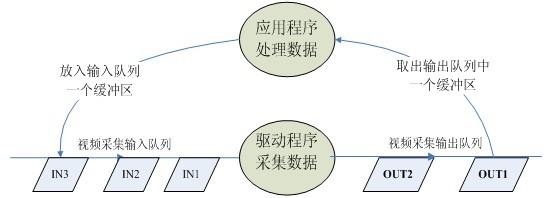

V4L2 Capture
命令行V4L2获取图片工具
参考文档
https://gist.github.com/piec/8791163
简要说明
源代码：sample
V4L2摄像头获取照片工作原理
打开视频设备文件：
int fd=open("/dev/video0",O_RDWR)查询视频设备的能力，比如是否具有视频输入,或者音频输入输出等：
ioctl(fd_v4l, VIDIOC_QUERYCAP, &cap)设置视频采集的参数
设置视频的制式，制式包括PAL/NTSC，使用：
ioctl(fd_v4l, VIDIOC_S_STD, &std_id)设置视频图像的采集窗口的大小，使用：
ioctl(fd_v4l, VIDIOC_S_CROP, &crop)设置视频帧格式，包括帧的点阵格式，宽度和高度等，使用：
ioctl(fd_v4l, VIDIOC_S_FMT, &fmt)设置视频的帧率，使用：
ioctl(fd_v4l, VIDIOC_S_PARM, &parm)设置视频的旋转方式，使用：
ioctl(fd_v4l, VIDIOC_S_CTRL, &ctrl)
向驱动申请视频流数据的帧缓冲区
请求/申请若干个帧缓冲区，一般为不少于3个，使用：
ioctl(fd_v4l, VIDIOC_REQBUFS, &req)查询帧缓冲区在内核空间中的长度和偏移量：
ioctl(fd_v4l, VIDIOC_QUERYBUF, &buf)
应用程序通过内存映射，将帧缓冲区的地址映射到用户空间，这样就可以直接操作采集到的帧了，而不必去复制；
buffers[i].start = mmap (NULL, buffers[i].length, PROT_READ | PROT_WRITE, MAP_SHARED, fd_v4l, buffers[i].offset)
将申请到的帧缓冲全部放入视频采集输入队列，以便存放采集的数据：
ioctl (fd_v4l, VIDIOC_QBUF, &buf)开始视频流数据的采集 ：
ioctl (fd_v4l, VIDIOC_STREAMON, &type)驱动将采集到的一帧视频数据存入输入队列第一个帧缓冲区，存完后将该帧缓冲区移至视频采集输出队列。
应用程序从视频采集输出队列中取出已含有采集数据的帧缓冲区。：
ioctl (fd_v4l, VIDIOC_DQBUF, &buf)应用程序处理该帧缓冲区的原始视频数据。
处理完后，应用程序的将该帧缓冲区重新排入输入队列,这样便可以循环采集数据。：
ioctl (fd_v4l, VIDIOC_QBUF, &buf)重复上述步骤取出、采集过程，直到停止采集数据。 
停止视频的采集。：
ioctl (fd_v4l, VIDIOC_STREAMOFF, &type)释放申请的视频帧缓冲区
unmap，关闭视频设备文件：close(fd_v4l)